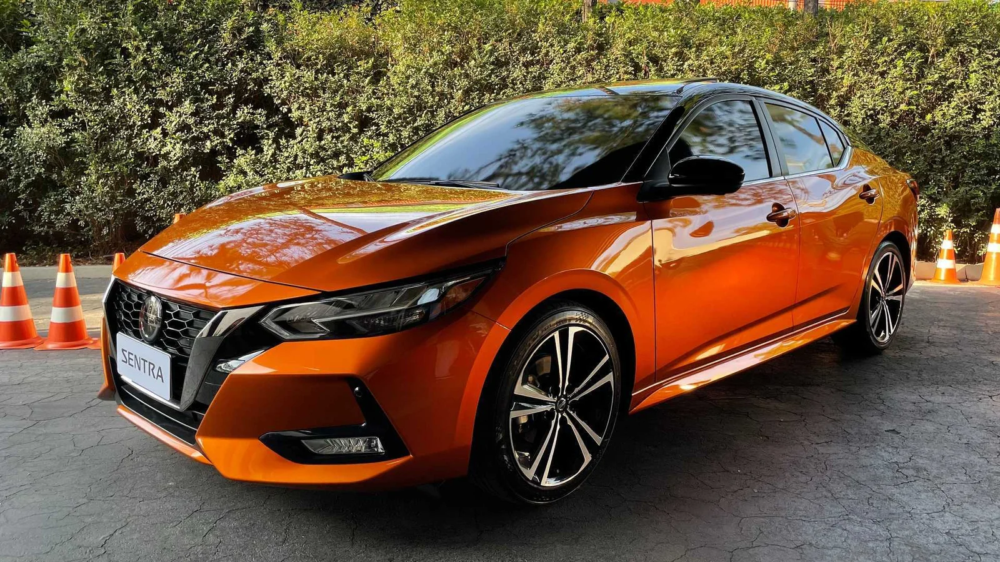
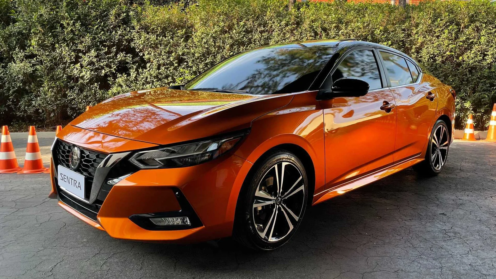

Nissan Sentra 2024
 

Se você prestou atenção no preço do Virtus Exclusive, vai achar o Nissan Sentra uma opção ainda melhor. E isso num segmento dominado pelo Toyota Corolla, que vende tanto por aqui. Mas o renovado Sentra tem diversas qualidades que você deve conhecer, começando por seu visual. É raro achar alguém que não tenha gostado de seu design, assim como é difícil passar despercebido na rua se você estiver dentro desse sedã. A versão mais barata Advance (R$ 151.490) já vem com rodas diamantadas aro 17, ar digital dual zone, bancos dianteiros aquecidos (elétrico para o motorista), sensor de luz, piloto automático, faróis full LED, 6 airbags, alerta de colisão frontal, assistente de frenagem, câmera de ré, sensores de estacionamento dianteiros e traseiros e multimídia de 8″ com seis alto-falantes. Pulando para a versão topo de linha, o Sentra ganha partida remota, ACC, teto solar, alerta de tráfego cruzado traseiro, assistente de permanência em faixa, monitoramento de ponto cego, câmera 360º e sistema de som Bose. Mesmo resistindo ao downsizing e mantendo seu 2.0 aspirado de 151 cv e 20 kgfm, o modelo da Nissan apresenta um rodar bem suave e ótimas médias de consumo. E ele ainda tem o melhor espaço interno da categoria.